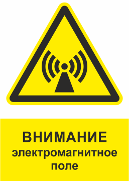
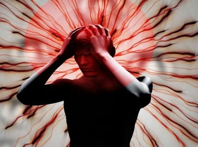
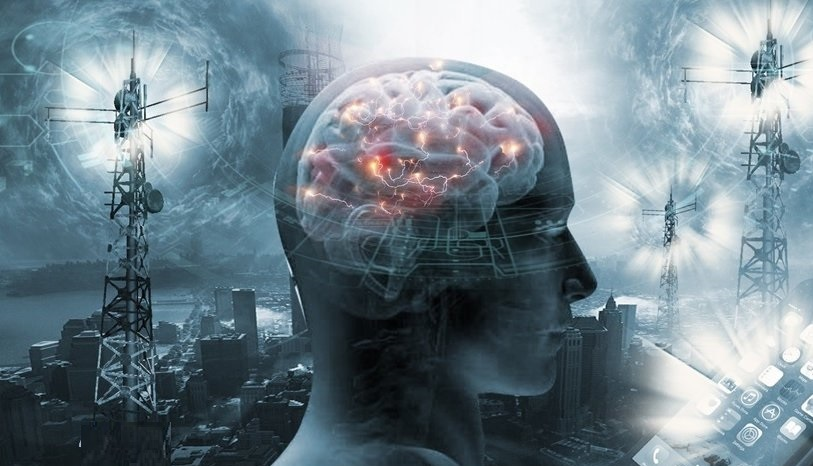

Незримая угроза! Информация о воздействии электромагнитных полей на здоровье человека.

• При нахождении в магнитном поле с индукцией более 0,2 мкТ детей в возрасте до 15 лет рак возникает в 2,7 раза чаще, чем в обычной среде – таковы данные исследования Шведского института научных исследований.;
• При постоянной работе за компьютером зрение ребенка падает на одну диоптрию раз в год - статистика ВОЗ;
• У беременных женщин, работающих за компьютером, выкидыши случаются в 1,5 раза чаще-вывод после исследования шведских ученых;
• Американские ученые официально установили негативное влияние магнитного поля мобильного телефона во время работы на состав крови и хрусталик глаза;
• Электрики заболевают опухолями головного мозга в 13 раз чаще, чем люди других профессий-данные ВОЗ.
Список можно продолжать еще долго. Важно осознавать, что электромагнитное излучение (ЭМИ) представляет неменьшую угрозу для здоровья человека, чем радиация. Поэтому электромагнитное поле следует измерять на работе или дома, чтобы вовремя принять защитные меры и контролировать ситуацию.Организм человека обладает собственным магнитным полем.Его называют аурой или биополем. Эта оболочка защищает от воздействия подобных внешних факторов. Но если их сила достаточно высока, биополе теряет свою функцию,разрушается,и в организме происходят изменения.
Источники ЭМИ.

Источниками ЭМИ являются предметы и устройства, которые используются ежедневно.:
• Телевизор и компьютер;
• Микроволновая печь;
• Мобильные устройства;
• Поезд и метро в момент старта;
• Линия электропередачи;
• Места массового скопления людей;
• Транспортные средства и другие источники.
У каждого из описанных объектов есть определенные показатели индукции. Следовательно,измерение электромагнитного поля работающей микроволновой печипоказывает,что оно составляет 8мктл,а измерение электромагнитного поляпылесоса-100мктл.Нормальное значение составляет
Воздействие ЭМИ на жизненно важные органы.

В конце 60-х годов прошлого века ученые создали термин "радиоволновая болезнь». На первой стадии у нее есть симптомы, которые возникают у людей в периоды обычной усталости, поэтому они не обращают на них внимания. Это бессонница, головные боли, низкая работоспособность и плохая концентрация.
При небрежном отношении к этим признакам в дальнейшем развиваются аритмии, повышается уровень сахара в крови, учащаются простудные заболевания.
Нервная система человека больше всего страдает от негативного воздействия электромагнитных полей.Сила внешнего поля снижает проницаемость клеточной мембраны, что приводит к дефициту кальция. Нервная система реагирует на это ухудшением памяти, замедленным и реакциями и депрессивными состояниями.
Также установлено:
ЭМИ может снижать иммунитет;
Воздействие поля вызывает заболевания эндокринной системы;
Эффект электрического и магнитного воздействия на клетки крови ухудшает проницаемость мембраны, приводит к аритмии, повышению артериального давления и ухудшению работы всей сердечно-сосудистой системы;
Постоянное воздействие сильного магнитного поля, снижение репродуктивной функции с риском генетической патологии.
Электромагнитные поля с сильной индукцией особенно опасны для растущих организмов. Голова ребенка меньше, чем у взрослого. Дети и беременные женщины особенно подвержены риску, поскольку растущие и развивающиеся ткани обладают высокой способностью поглощать волны.
Способы защиты от ЭМИ.
